Allenamento · alimentazione · Coach AI
Awakening scrive il tuo programma di allenamento e lo fa crescere settimana dopo settimana. Calcola i carichi sul tuo massimo, ti guida in palestra, tiene il conto di quello che mangi e ti risponde quando hai un dubbio.
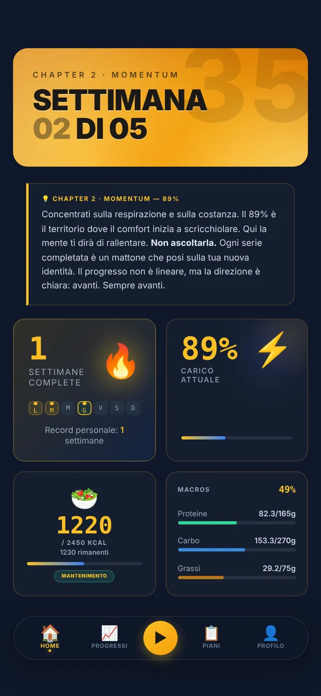
Il programma
Ogni esercizio parte dal tuo MTR, il massimo tecnico: il peso più alto che sollevi con tecnica pulita per le ripetizioni previste. Capitolo dopo capitolo il carico sale e le ripetizioni scendono. Nella quinta settimana il carico resta vicino al picco e le serie si dimezzano, per recuperare e consolidare.
ACSM 2009 · Bosquet et al. 2007 · Mujika & Padilla 2003Prima di cominciare · 3 funzioni
Dici il tuo obiettivo, da quanto ti alleni e con cosa. Awakening scrive le schede e le mette in calendario.
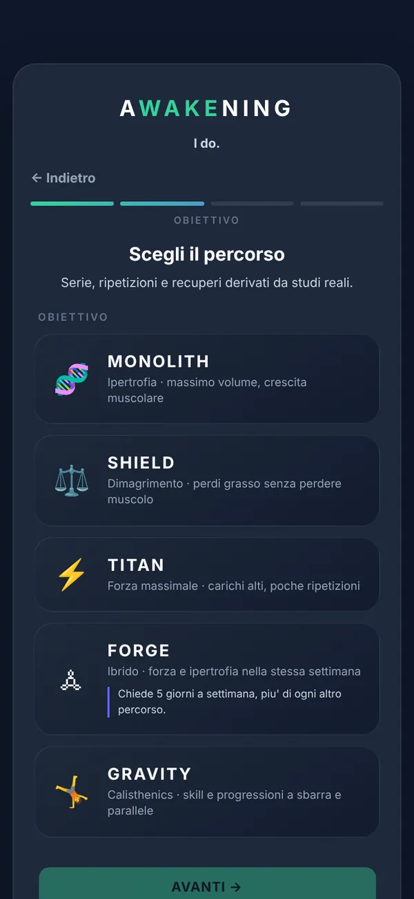
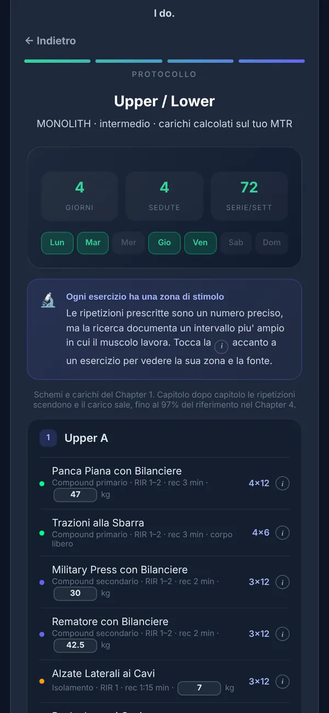
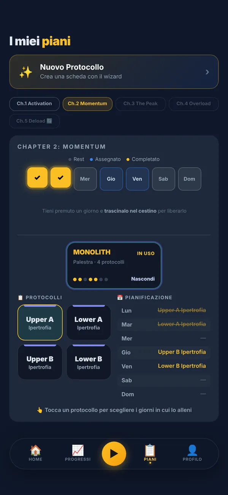
MONOLITH per la massa, SHIELD per dimagrire senza perdere muscolo, TITAN per la forza, FORGE ibrido, GRAVITY a corpo libero. In palestra, a casa o senza attrezzi.
Giorni, serie a settimana, esercizi con ripetizioni, recuperi e carichi di partenza. Ogni esercizio ha la sua zona di stimolo, con la fonte.
ACSM 2009 · Schoenfeld 2016 · Grgic 2018Assegni ogni scheda ai suoi giorni e il calendario del capitolo segna quello che hai fatto. Le schede si salvano e si riusano.
In palestra · 6 funzioni
L'app sa cosa ti tocca oggi, con quale peso e quanto recuperare. E tiene il conto dei tuoi progressi.
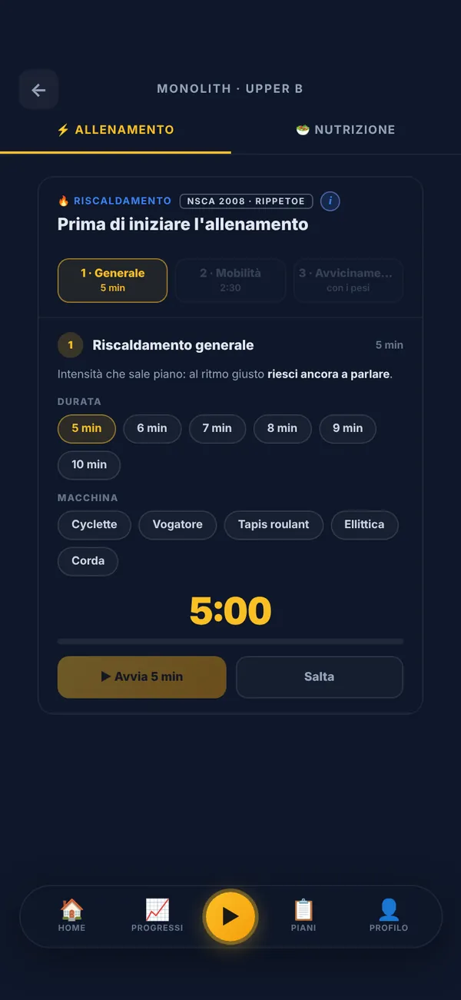
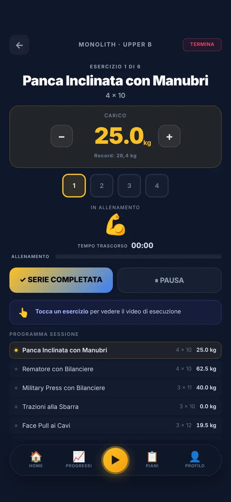
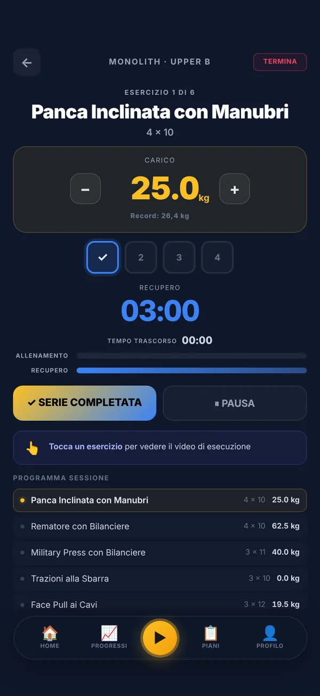
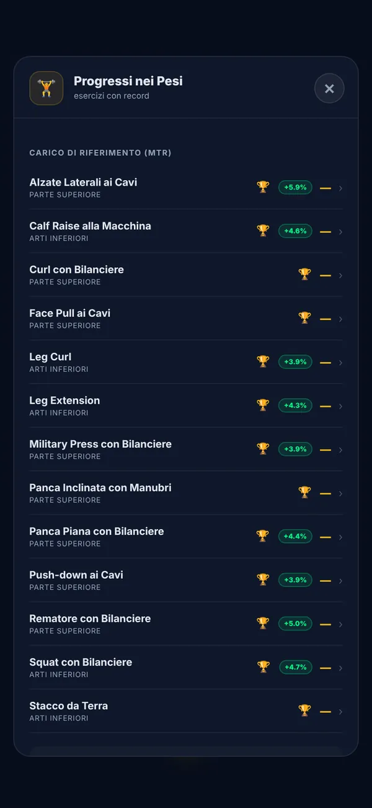
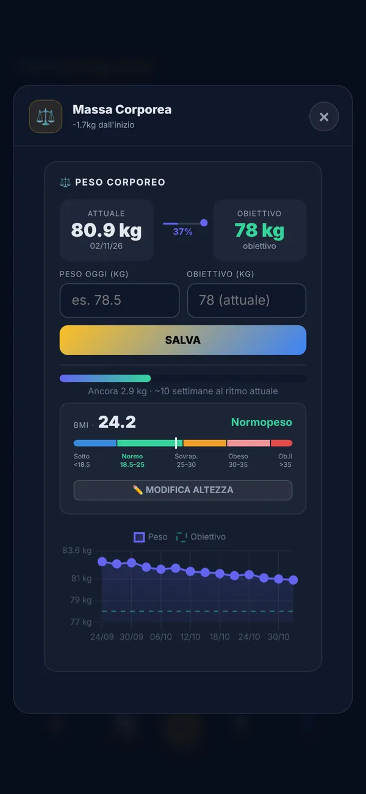
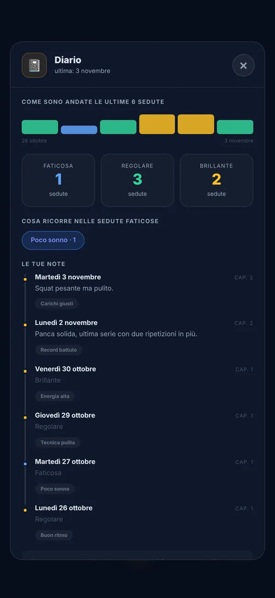
Generale, mobilità e serie di avvicinamento con i pesi, ognuna con il suo timer. L'avvicinamento compare solo dove serve.
NSCA 2008Serie, ripetizioni e il carico di oggi, calcolato sulla percentuale del capitolo. Lo correggi con un tocco; sotto c'è il tuo record.
Segni la serie e parte il recupero giusto per quell'esercizio. Con le notifiche attive ti avvisa anche a schermo spento, e la tua musica continua.
Storico e record per ogni esercizio. Due ripetizioni in più nell'ultima serie per due sedute di fila, e l'app ti propone di salire.
Baechle & Earle, NSCA 2008Pesate, obiettivo, BMI e la curva delle ultime settimane. Al ritmo attuale vedi quanto ti manca.
A fine seduta una domanda: faticosa, regolare o brillante, e perché. Il diario mostra cosa ricorre nelle sedute difficili.
A tavola · 3 funzioni
Un obiettivo calcolato su di te, i pasti della giornata e modi veloci per aggiungere quello che mangi.
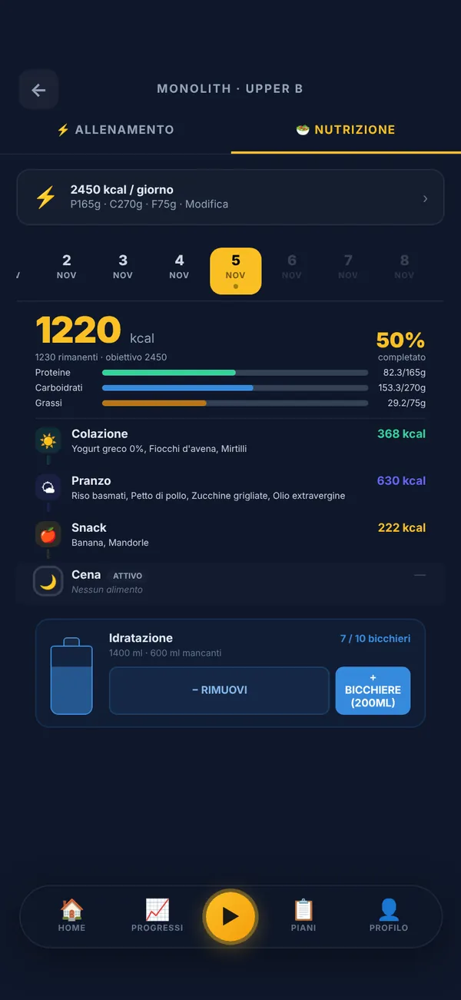
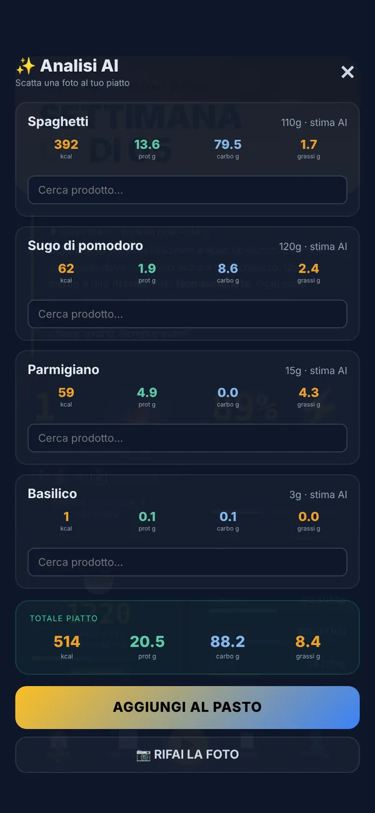
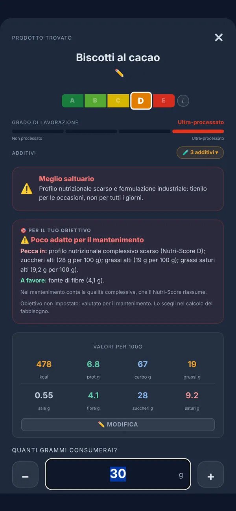
Il fabbisogno parte dai tuoi dati e dal tuo obiettivo. Vedi calorie e macro pasto per pasto, e l'acqua bicchiere per bicchiere.
Fabbisogno: Mifflin-St JeorFotografi il piatto: il Coach separa i componenti e stima grammi, calorie e macro di ciascuno. Se vuoi scegli il prodotto esatto, poi lo aggiungi.
Inquadri il codice a barre: valori per 100 g, Nutri-Score, grado di lavorazione e additivi, con un giudizio sul tuo obiettivo.
Dati: Open Food FactsIl Coach · 2 funzioni
Risponde in chat quando hai un dubbio, e la sera ti scrive com'è andata la giornata.
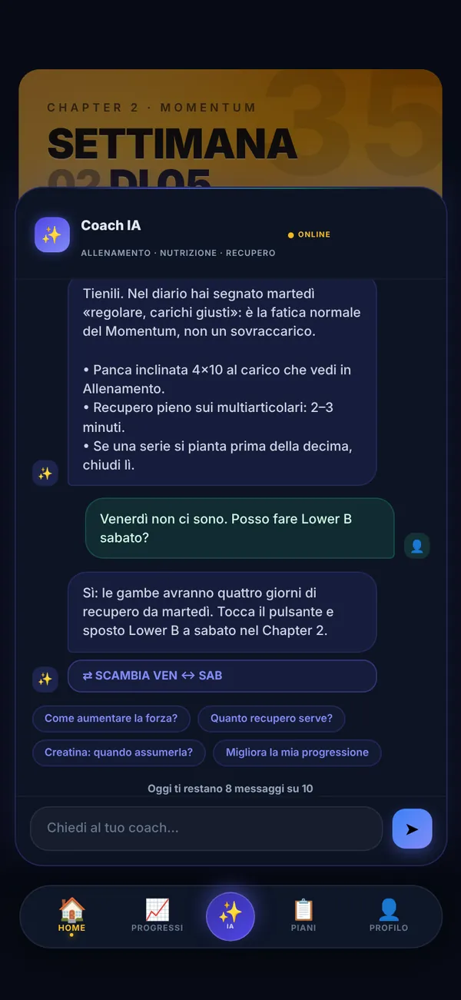
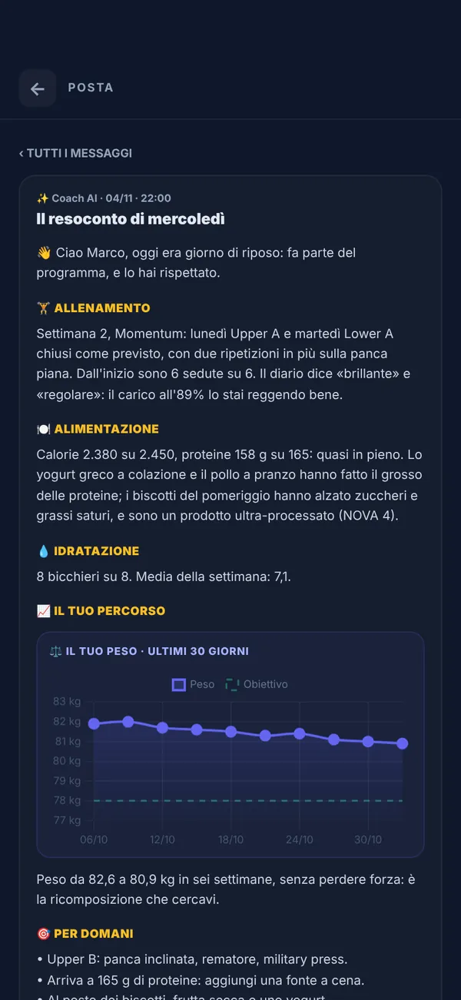
Carichi, recupero, cosa mangiare prima. Vede schede, capitolo, record e settimana. Quando serve propone una modifica e la applichi con un tocco.
Alle 22 il resoconto della giornata: allenamento, pasti, acqua, peso e cosa fare domani. La domenica quello della settimana, ogni quattro settimane quello del mese.
Ogni giorno · 2 funzioni
Promemoria agli orari che scegli tu e traguardi che arrivano da soli.
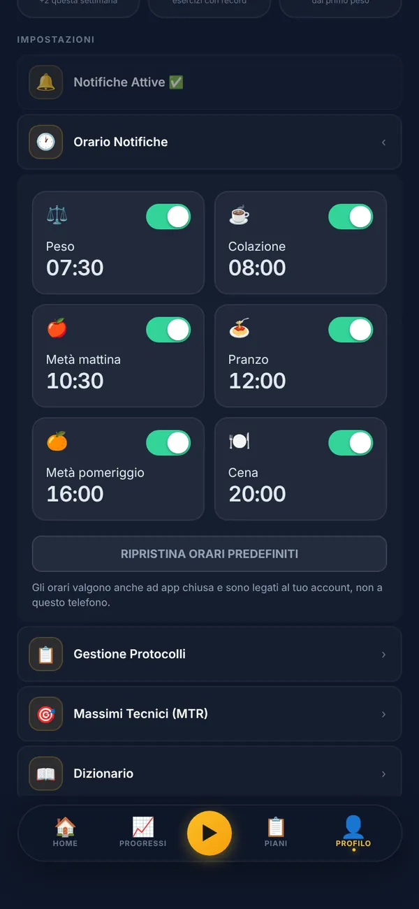
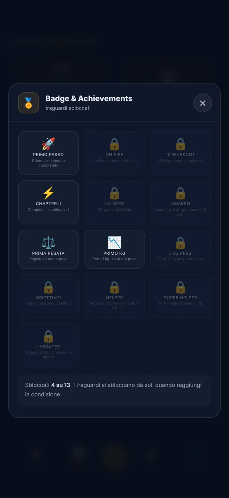
Pesata, colazione, spuntini, pranzo e cena: scegli gli orari e quali tenere accesi. Arrivano anche con l'app chiusa.
Il primo allenamento, il primo chilo perso, il primo capitolo chiuso. Si sbloccano da soli quando li raggiungi.
Awakening arriva presto sullo store. Il link per scaricarla comparirà qui.